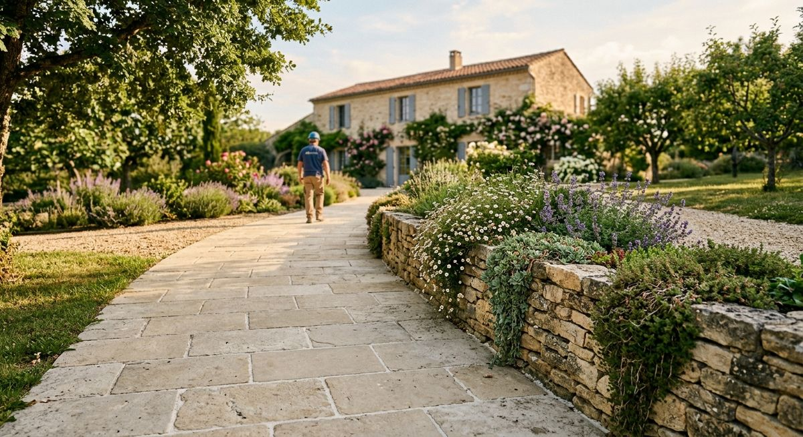
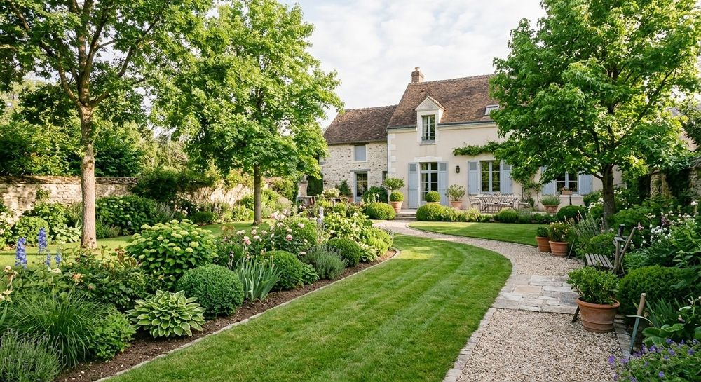

Conseil et accompagnement
Réaliser l’aménagement de votre jardin vous-même, épaulé par un professionnel.
Avis Vert, à Beynes : conseils et accompagnement pour aménager votre jardin vous-même, choix de végétaux de qualité professionnelle et suivi technique de vos projets paysagers.

Pépiniériste de formation, le fondateur d’Avis Vert a découvert le monde des jardins, puis conduit des travaux de projets majeurs et haut de gamme en région parisienne.
Il a ensuite rejoint la direction d’une entreprise, en charge de la production au sein d’une équipe d’une cinquantaine de collaborateurs. Aujourd’hui, il met ce savoir-faire à votre service.
Réaliser l’aménagement de votre jardin vous-même, épaulé par un professionnel.

Une recherche de végétaux et de fournitures de qualité professionnelle.

Le suivi des projets paysagers que vous faites réaliser par une entreprise.

Suivi de chantier et contrôle des réalisations pour architectes et maîtres d’œuvre.
Conseils, végétaux et suivi pour réussir l’aménagement de votre jardin.
Suivi de travaux, contrôle des réalisations et solutions techniques.
Conduite de travaux lors des surcroîts d’activité et apport de technicité.

Un projet à Beynes ou un chantier à suivre ? Appelez Avis Vert ou écrivez-nous.